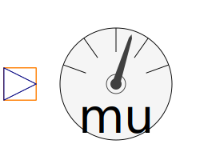

This package contains sensors to be used with transient flux tubes models in order to provide information for quasi static parameters.
| Name | Description |
|---|---|
|  FundamentalWavePermabilitySensor | Sensor of fundamental wave permeability |
|
|
Determines permeability from flux and magnetic potential difference |